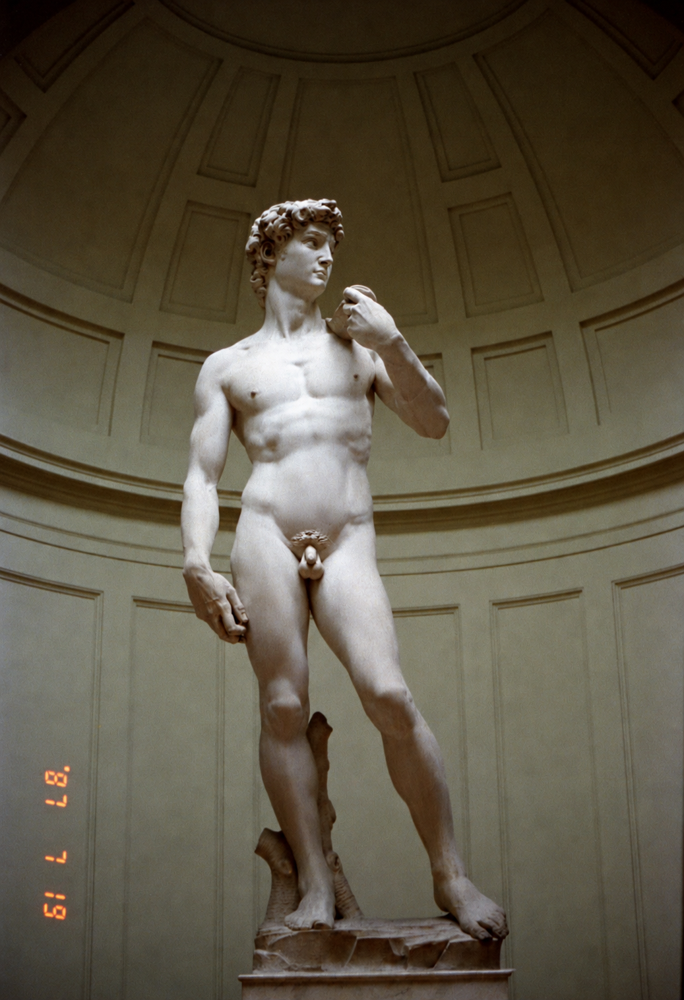

|
エジプトに来て初めの頃に写真の現像とプリントに出すと、キズは付けられるし色は茶色っぽくなる。  処で色調補正を出来るかどうかの確認方法はプリントの裏に５〜８桁の英数字が書かれていれば、そこでは出来る機械 を使っています。店員が色調補正を出来るかどうかは別問題ですが。フォトショップを使っている人ならこの色調補正の 難しさが分かりますよね。左の写真が何度焼き増ししても同じ色調で出来上がり驚きました。 その後店員に致命的な傷を付けられてしまった。 |
３１．「え？日本製の焼付け機。日本人でも出来ないのに。」(写真有)